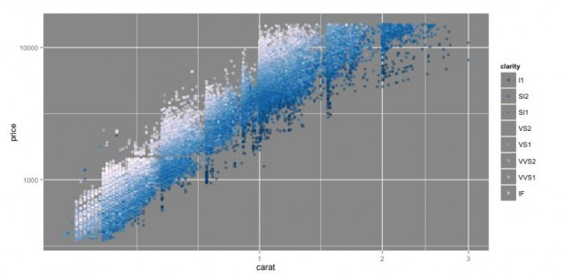
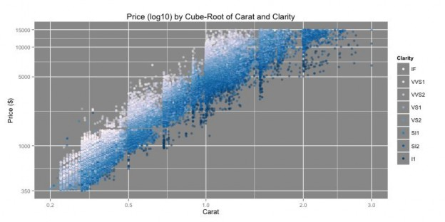
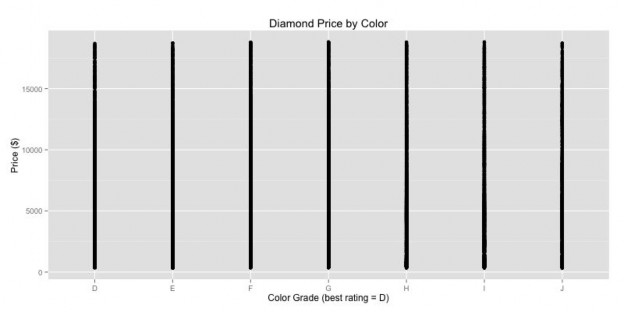
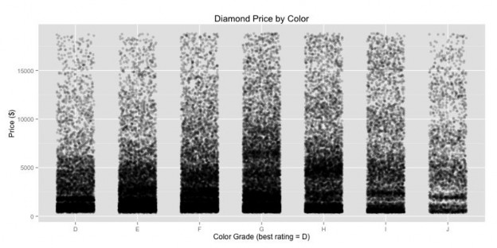
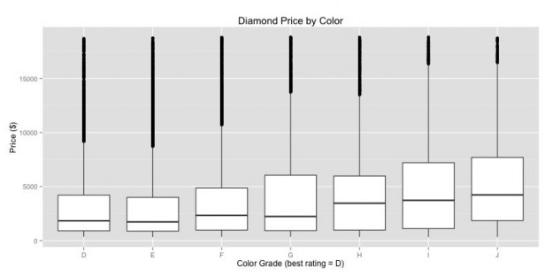
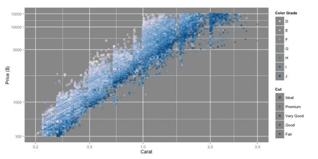
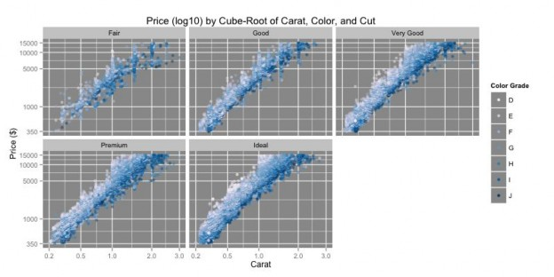
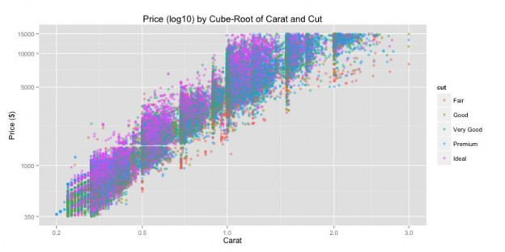
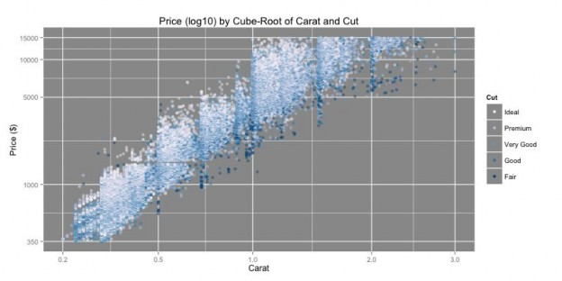

原文
提供更好的翻译建议
创建有效图
标题，标签和传说
变量类型确定绘图类型 注意信息过载
使用颜色作为视觉编码
由于两个主要原因，创建高效且有效的图表非常重要。首先，在向其他人展示您的结果时，有效的情节将传达您想要呈现的结果，并为观察者提供一个简单易懂的故事。其次，当您进行初步探索时，适当的绘图将允许您了解数据中的模式或趋势，从而节省您跟踪带来最有趣结果的路径的时间。本文档旨在提供一些创建有效图表的技巧，以进一步实现这两个目标。
标题，标签和传说
当它们被正确注释时，它将帮助其他人理解你的情节。在你的情节上有一个信息丰富，但简洁的标题。同样，对于其他人想要阅读的图，当您有第三个要绘制的变量时，请使用描述性轴标签和图例。确保读取器具有足够数量的轴线，以便了解所绘制数据的比例。


变量类型确定绘图类型
重要的是要考虑变量在选择应如何绘制时所采用的值。需要考虑许多不同的变量类型，包括名义变量
（因子水平没有固有排序的分类变量），序数（其因子水平具有固有序列的分类变量），离散定量（带有固定数值的数值的变量）和连续定量（带数值的变量）值为任意精度）。如果使用分类变量，则可能需要修改或更改适用于定量变量的图和视觉元素。
示例：当您将两个变量相互绘制时，直线散点图不一定是最佳选项，即使这两个变量本质上都是定量的。如果其中一个变量仅采用离散值，那么沿该轴在点位置引入抖动以扩展数据可能是合适的。这样可以更好地了解变量的密度。或者，我们可能想要使用不同的图而不是散点图。如果其中一个变量是非数字的，则散点图没有多大意义。相反，箱形图，小提琴图，密度图或条形图将是更有效的数据表示。



注意信息过载
仅仅因为你可以为情节添加额外的美学特征并不意味着你应该。应该使用视觉元素方面的谨慎平衡来保持您的情节可解释。
在让图中的点代表三个以上的变量之前，请仔细考虑。绘图中的每个点通常都包含有关x和y位置的两个变量的信息，其他变量包含在其他可视编码中（颜色，形状，大小等）。如果单身
点包含多个非位置编码，该图可能包含太多信息，模式和趋势不容易被发现。最好是制作多个简单的图，而不是尝试将所有内容整合到一个图中。
还要注意冗余信息。例如，如果在一个轴上绘制变量，请考虑是否需要通过添加可视编码（例如用于强调的颜色）来再次显示该信息。将图例匹配颜色与轴标签或位置相比是冗余的示例。虽然“双重编码”变量可以强调证明变量的重要性，但是存在信息过载或混淆的可能性。在某些情况下，更简单的图形会更好。如果您不需要图例，请不要使用图例。读者可以专注于主要数据显示和任何相关标签，而不是具有处理图例并让他们的眼睛从图例跳到数据的认知开销。


使用颜色作为视觉编码
颜色是图中第三个变量的常见可视编码。R有多种颜色选项，尤其是在使用ColorBrewer时。请务必使用适合的颜色组
变量类型由颜色方案编码。有三种类型的颜色方案可供选择：定性（使用带有ColorBrewer相关函数的type =“qual”选项），sequential（type =“seq”）和diverging（type =“div”）。
在绘制名义变量时使用定性颜色方案。定性调色板中的后续级别往往在色调上变化很大，以强调级别彼此不相关。当我们使用定性调色板制作绘图时，我们不希望看到跨越因子级别的颜色趋势，但我们可能会看到某些级别以有趣的方式聚类，以帮助我们识别有趣的模式。
对于按顺序排序的变量，无论是序数还是定量，我们更喜欢顺序或发散的配色方案。每种都以不同的方式使用。大多数情况下，顺序调色板是最合适的：这些方案从浅到深改变饱和度，有时沿着一系列色调来证明值沿着比例增加。较浅的颜色用于表示较小的值，而较暗的颜色表示较大的值。或者，可以对比例应用相反的顺序，其中较浅的颜色表示“更好”的值，而较暗的颜色表示“较差”的值。
另一方面，一些变量具有临界中心点或零，其中高于中心的值和低于中心的值是要识别的重要特征。对于这些，我们使用发散调色板，其中心值最轻，距离中心最远的值最暗。大于中心的值取一个色调，而小于中心的值倾向于第二个色调。

